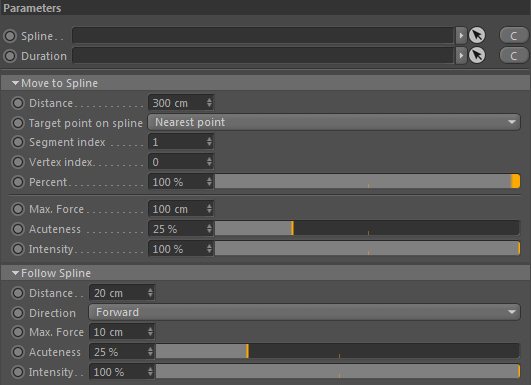

Parameters
Parameters

Spline
Drop here a Cinema 4D spline-based object.
Duration
Defines when and how long this force operates.
Parameters::Move To Spline
Distance
Defines the maximum distance (in C4D space) this force creates forces that target the spline path (location it points to depends on the 'Target point on spline' setting).
Any position outside this distance creates no force at all.
Target point on spline
Define the target point on the spline path to create target forces for.
1. Nearest Point - the nearest location to the processed position
2. Nearest Vertex - the nearest spline vertex to the processed position
3. Vertex index - a specific vertex
4. Percentual Position - a position on the spline defined by percentual length
Note: Keep in mind that at any time this force does all the calculations based on the current simulation state.
Segment index
(Only used if 'Target point on spline' is set to 'Vertex Index' or 'Percentage')
Defines the index of the segment to use.
Vertex index
(Only used if 'Target point on spline' is set to 'Vertex Index')
Defines the index of the vertex to use.
Percent
(Only used if 'Target point on spline' is set to 'Percentual Position')
The position along the spline given as a percentage value. 0% means at the first vertex, 50% means exactly at the middle of the path and 100% at the end (or at the first point in case the spline is closed).
Max. Force
The maximum magnitude of the resulting targeting force.
Acuteness
The urge to move to the target point on the spline.
Intensity
The overall intensity multiplier of the resulting targeting force.
Parameters::Follow Spline
Distance
The maximum distance to generate spline following forces instead of spline targeting forces.
Any position that is nearer to the spline as this distance will create spline following forces.
Direction
The spline path direction to follow. Either forward or backward.
Max. Force
The maximum magnitude of the resulting spline following force.
Acuteness
The urge to follow the spline path.
Intensity
The overall intensity multiplier of the resulting spline following force.